Sóc Trăng, được biết là thành phố của ba dân tộc chính, gồm: Kinh, Hoa, Khmer, là một nơi được hình thành
sự giao thoa giữa văn hóa truyền thống của ba dân tộc đó, đặc biệt nổi tiếng với những ngôi chùa Khmer, và
ẩm thực độc đáo kết hợp từ cả ba dân tộc. Tỉnh Sóc Trăng nằm ở cửa Nam sông Hậu, cách Thành phố Hồ Chí Minh
khoảng 231 km, cách Cần Thơ 62 km, nằm trên tuyến Quốc lộ 1 nối liền các tỉnh Hậu Giang, thành phố Cần Thơ,
Bạc Liêu, Cà Mau. Nơi em sống là một vùng quê nhỏ gần thành phố Sóc Trăng, xã Phú Tân - Huyện Châu Thành,
đến thời điểm hiện tại "Sóc Trăng" đã không còn tồn tại vì đã sáp nhập với Cần Thơ, dẫu đã trải qua nhiều sự
thay đổi về hành chính, và thay đổi theo thời gian em đã rời đi, mỗi lần trở lại quê em vẫn luôn giữ rõ nét
đặc trưng bình dị, giản sơ của nó.
Con người và làng quê
Nơi em sinh ra là một vùng nông thôn nhỏ, yên bình, mỗi chiều, vùng quê
ấy sẽ trở nên tĩnh lặng đến bất thường với những con đường nhỏ chật hẹp
và gần như không một bóng người mỗi lúc giữa trưa, thứ duy nhất phá vỡ
được sự yên lặng thất thường đó là tiếng xe chạy trên đường lộ chính và
âm thanh từ những quán nước vẫn đang mở. Ngoài ra, vùng quê em còn có
rất nhiều ngôi chùa, dù hầu hết những ngôi chùa ấy đều là chùa Khmer,
những nơi đó đã chứa chan rất nhiểu kỷ niệm tuổi thơ, không chỉ của em
mà của tất cả những đứa trẻ đã lớn lên trong xóm. Những lần đi lễ hội, hay
những chiều dạo chơi sau khi đi học về là một phần khó quên trong ký ức của
mỗi con người đã trưởng thành nơi đây.
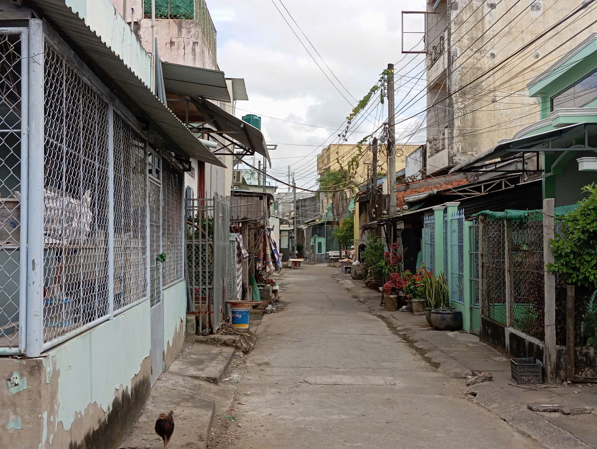
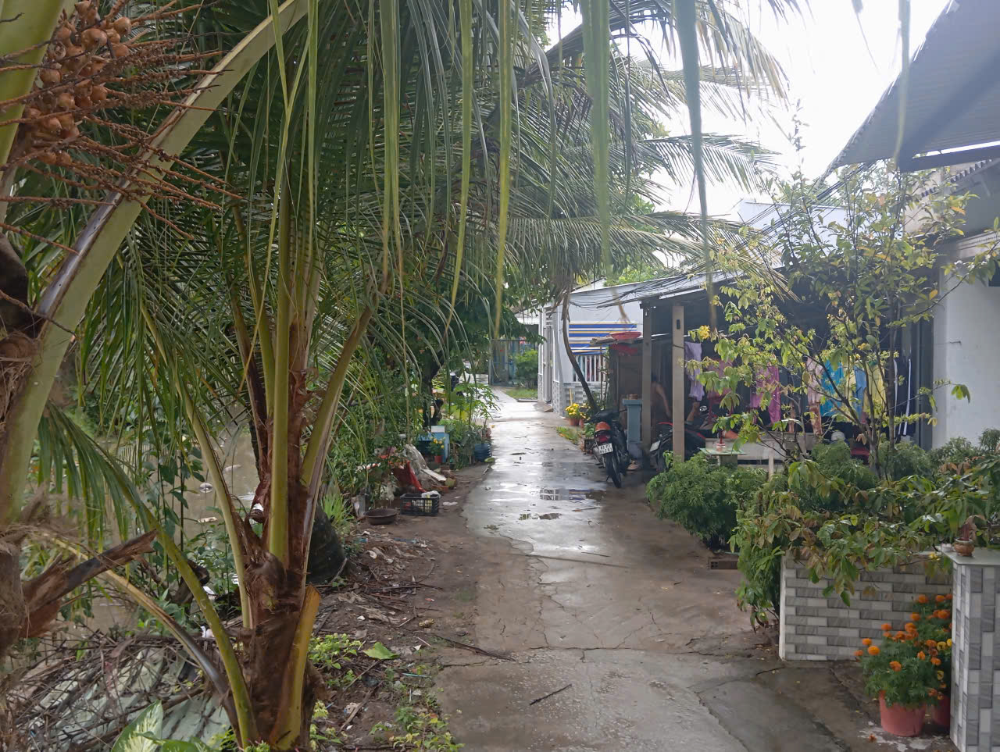
Con người nơi đây rất thân thiện, dễ gần, mỗi người nơi đây đều hiểu rõ nhau như thể
người thân trong gia đình, tại xóm làng nơi em sống mọi người không chỉ là hàng xóm mà
còn là anh em, bạn bè tuổi thơ đã trưởng thành cùng nhau. Không xa từ nơi em sống còn
có những đồng ruộng lúa mênh mông, bát ngát, đây cũng là một nơi chứa chan đầy ký ức tuổi
thơ của những đứa trẻ đã lớn lên nơi đây, bao gồm cả bản thân em.
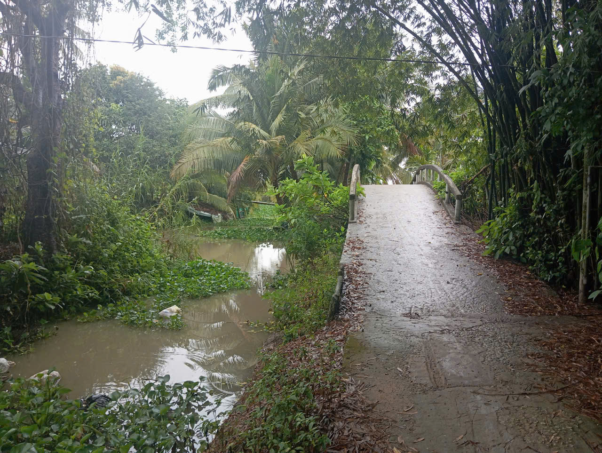
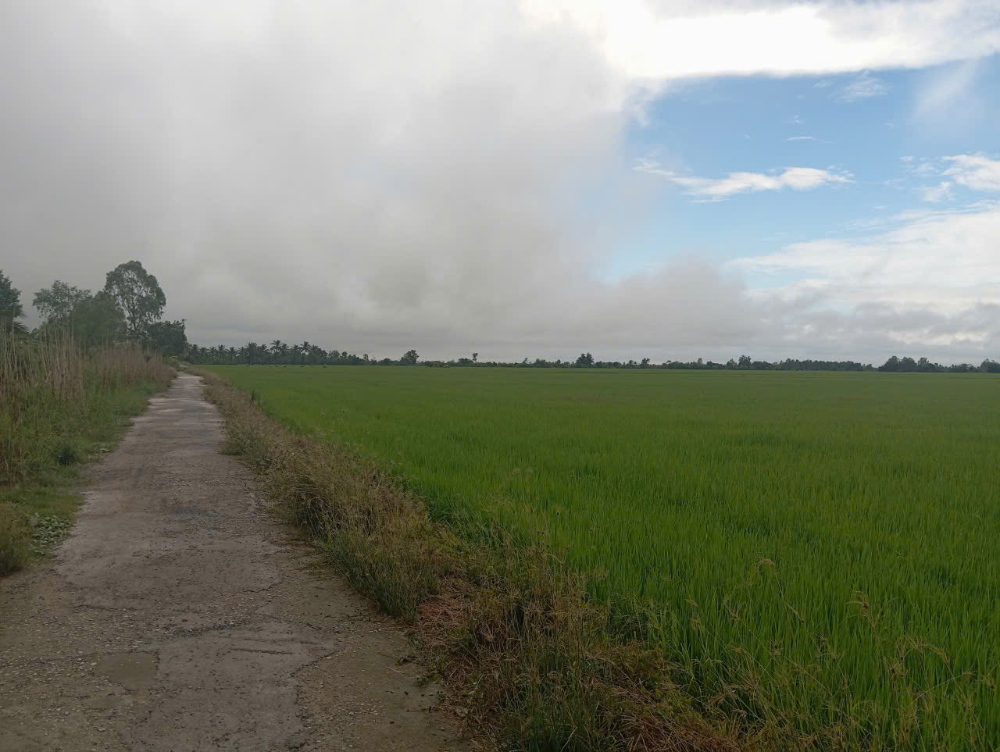
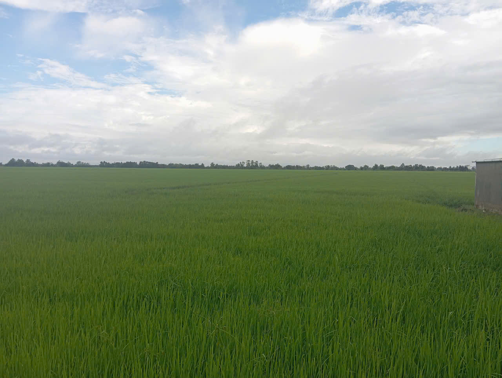
KẾT LUẬN
Là một vùng quê giản dị, một nơi có thể được tìm thấy ở gần như bất cứ đâu tại Việt Nam,
quê em gần như không có gì nổi bật hơn so với những nơi khác, dẫu vậy, đây vẫn là một nơi
của kỷ niệm, của ký ức tuổi thơ, thứ đã in sâu vào con người em và tiếp bước cùng em trên
con đường trưởng thành và sẽ mãi mãi là một phần con người của em, mỗi lần trở lại vùng quê
sẽ luôn có gì đó đã thay đổi so với khi xưa, và kể cả vậy, đây là nơi mà gia đình, những
con người em trân trọng nhất đang ở, đây là điều duy nhất chắc chắn không thay đổi.
Tết quê em có gì đặc biệt?
Nếu phải nói những nét riêng đặc biệt trong những ngày Tết ở quê em, thì đầu tiên phải
kể đến những ngôi chùa nhỏ ở quê em, cụ thể hơn, là những sự kiện tại chùa những
ngày gần và trong Tết, những ngôi chùa ấy đã được xây dựng cả từ
trước đời ông cha em, là nơi em dành một phần tuổi thơ của mình, là một trong những
lý do em trở thành con người mình của ngày hôm nay.
1. Chùa Thiên Hậu
Tại sao ngôi chùa này lại đặc biệt?, ngôi chùa này sẽ luôn là tâm điểm của sự chú ý vào những dịp
Tết vì khác với những ngôi chùa khác ở quê em, ngôi chùa này không phải chùa Khmer, trong khu vực
em sống, hầu hết các ngôi chùa ở đó đều là chùa Khmer, vì lí do này nên vào ngày Tết, những ngôi
chùa ấy thường rất vắng mặt, một vài trong số đó còn đóng cửa vào ngày Tết( vì Tết Khmer là vào
ngày khác). nhưng ngôi chùa này sẽ luôn mở và rất thường đông đến tấp nập, kể cả khi đã đến giữa
trưa, chiều hay thậm chí tối, có lẻ còn đông hơn.
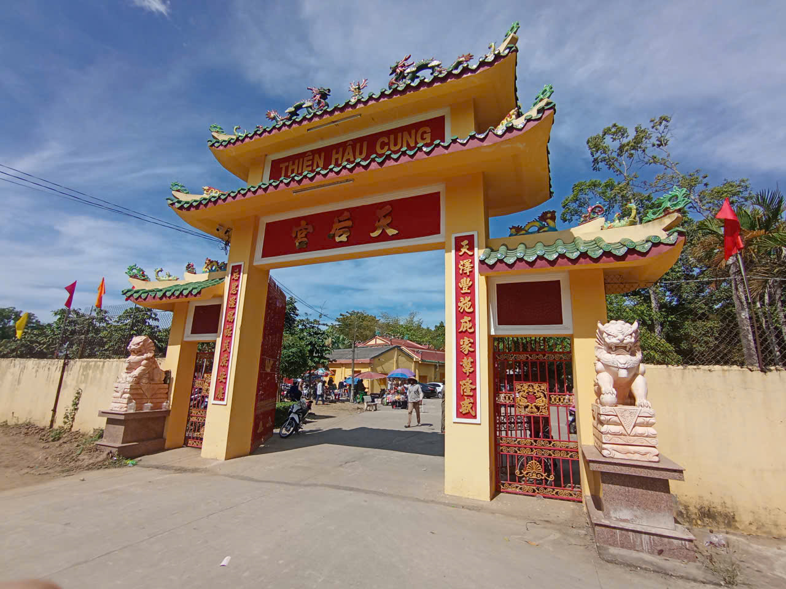
Ngôi chùa là nơi chất chứa cả một tuổi thơ của không chỉ em, mà còn của những
đồng bạn khác, những người em đã lớn lên cùng, sân chùa là nơi em đã cùng những
người bạn chơi những trò chơi nhân gian và mỗi khi Tết đến, những ngôi chùa ở
quê em đều sẽ được múa lân ghé qua để biểu diễn, có một thời diểm trong tuổi thơ,
em đã từng rất mê múa lân, đến mức được người thân mua tặng một bộ riêng cho bản thân,
đáng tiếc bộ múa lân đó cũng đã dần bị em lãng quên trên con đường trưởng thành.
2. Thần tài và thổ địa ghé nhà, múa lân ghé chùa
Thổ địa và thần tài ghé nhà là một sự kiện đặc biệt chỉ được thực hiện 2 ngày
mỗi năm, trong một năm, cứ vài ngày trước Tết, trên phố sẽ xuất hiện thần tài,
thổ địa, và theo sau là những người đánh chống chiêng, như báo hiệu rằng thần
tài và thổ địa đang đến nhưng đồng thời tiếng chống chiêng còn có thể mang theo
một ý nghĩa khác, khi những ngày Tết đến, đội múa lân sẽ di chuyển từ con phố này
sang con phố khác để tìm đến và biểu diễn ở khắp các ngôi chùa tại quê em, đáng tiếc
thay vì đội múa lân di chuyển không theo quy trình mà một cách tự do nên khó để đoán
được ngôi chùa nơi họ sẽ biểu diễn.
KẾT LUẬN
Cả hai điều trên đều là những nét văn hóa nổi bật quê em, cứ mỗi ngày Tết đến khi nghe tiếng chống chiêng
những đứa trẻ sẽ chạy ra xem thần tài thổ địa ghé nhà, điều này đã sẵn là một phần không thể thiếu mỗi ngày
Tết, và đôi lúc tiếng chống chiêng ấy cũng là đội ngũ múa lân ghé chùa để trình diễn, dẫu hai điều trên cũng
không quá nổi bật hay đặc biệt so với nhiều nơi khác, nhưng đối với em và có lẻ nhiều người khác tại quê,
hai điều trên đều chất chứa quá nhiều kỷ niệm tuổi thơ và là một phần đã làm nên người em của ngày nay.
 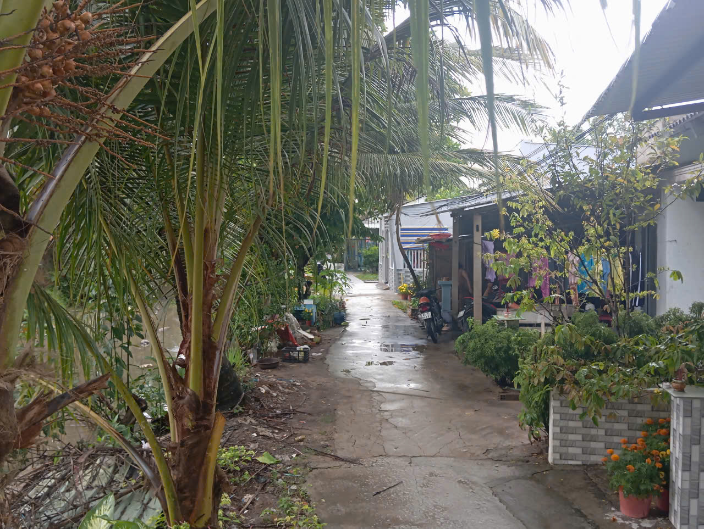
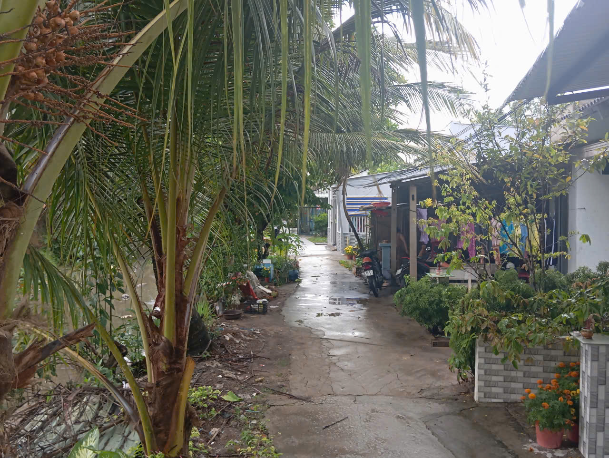

 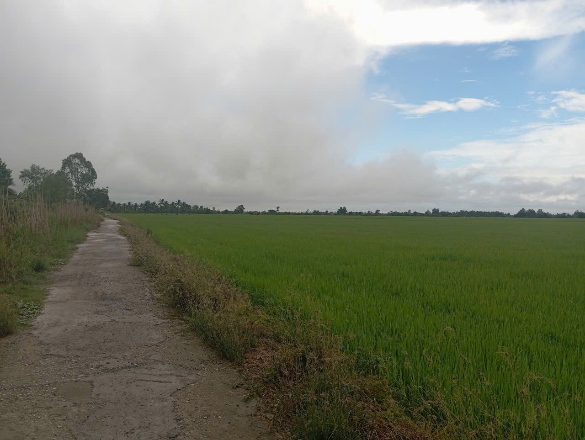
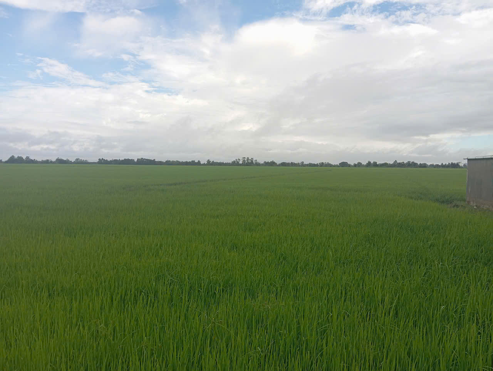
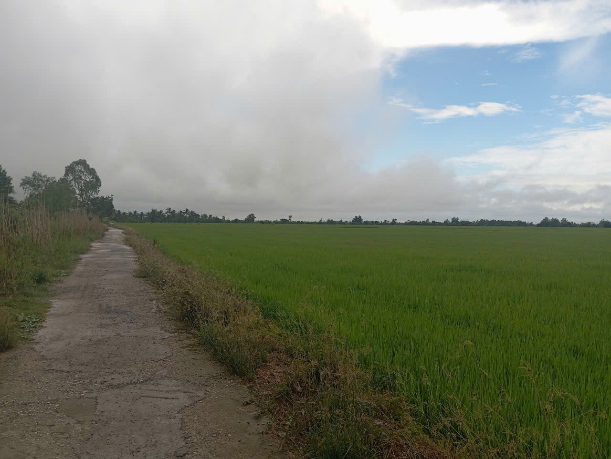
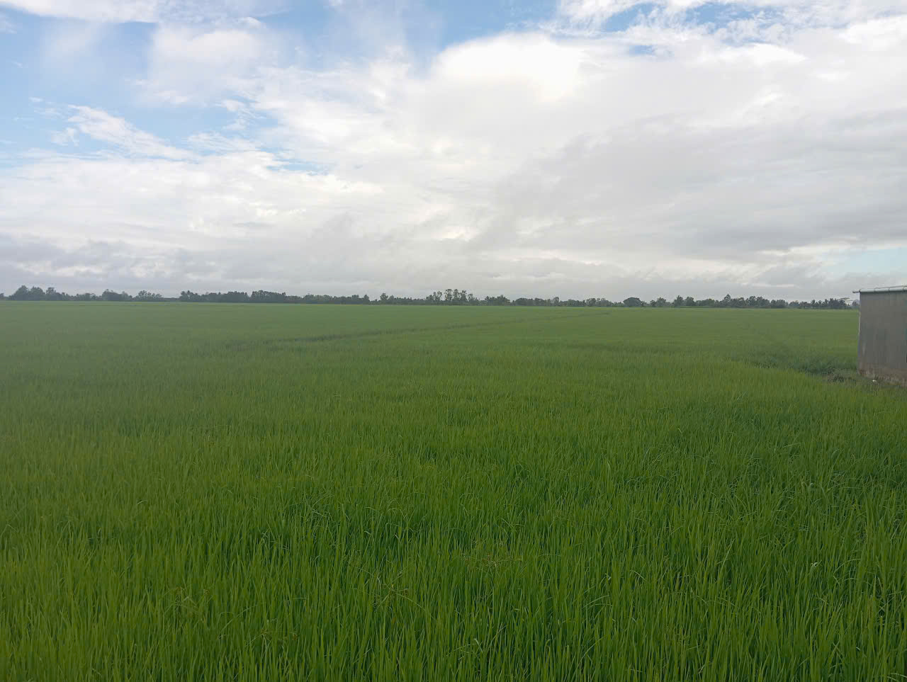